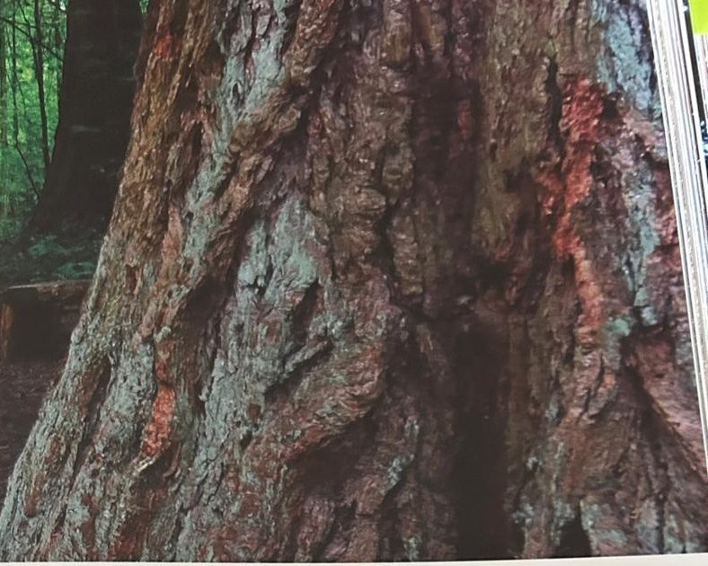
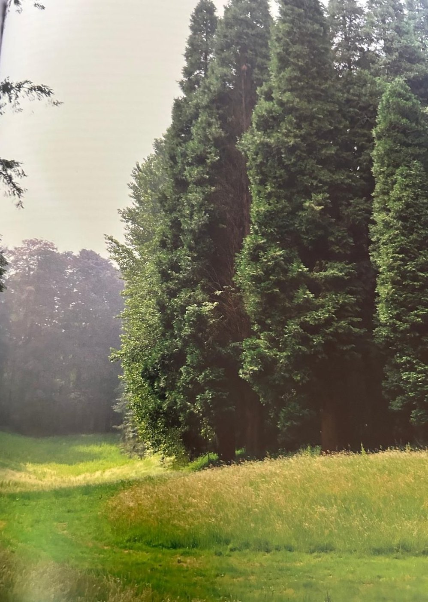

Groepen › Nieuwe Wereld
7. Californië, Sierra Nevada

Het Sierra Nevada gebergte, dat tussen het Californisch Bekken en het Rotsgebergte in ligt, is bekend als de groeiplaats van de Sequoiadendron of Mammoetboom, ook wel Bergmammoetboom genoemd om het verschil te maken met zijn neef uit de kustzone, de Kustsequioa. Deze Mammoetboom wordt niet de hoogste, maar wel de dikste en meest volumineuze, hij draagt geen bladnaalden maar veeleer bladschubben. Zijn natuurlijke verspreiding is eigenlijk beperkt tot verspreide plaatselijke bosjes en anders dan de Kustsequoia wordt hij niet in de productiebosbouw gebruikt omdat de houtkwaliteit te zwak is. In Groep 7 staan er met twee uitgebreide generaties dus in verhouding te veel en zouden begeleiders en andere bergbomen als Wierookceder, Coloradozilverspar, Draaiden, Ponderosaden meer plaats moeten innemen. Draaidennen, minder aangepast aan onze plaatselijke omstandigheden, worden hier niet erg oud. Na de droge zomer van 2019 heeft zich een catastrofale sterfte voorgedaan onder de zilversparren, waardoor er in de groep grote gaten zijn geslagen.
Uit het boek
3,55 ha · 22 soorten · 1264 bomen · weerstation Yosemite Valley
- Aan de rand staat de oorspronkelijke aanplant met de dikste boom van het arboretum, een mammoetboom van 1902 (625 cm).
- De zachte schors gaf de mammoetboom de bijnaam "boksboom".
- Waar de groepen 16, 7 en 8 samenkomen, aan de Diepe Weide, staat een "burcht" van wierookceders.


Bron: Geografisch Arboretum Tervuren. Een wereldreis rond bomen (2020), p. 114 en volgende.
Deelgroepen
- 7 – Sierra Nevada, Californië
Soorten in deze groep (22)
- Abies concolor var. lowiana239 bomen
- Sequoiadendron giganteumMammoetboom · 201 bomen
- Calocedrus decurrensWierookcipres · 190 bomen
- Abies grandisReuzenzilverspar · 184 bomen
- Pseudotsuga menziesiiGewone douglasspar · 140 bomen
- Pinus ponderosaWesterse gele den · 87 bomen
- Populus trichocarpaWest-Amerikaanse balsempopulier · 58 bomen
- Abies concolorColoradozilverspar · 45 bomen
- Tsuga mertensianaBerghemlock · 31 bomen
- Pinus contorta var. murrayanaMurrayana den · 26 bomen
- Acer macrophyllumGrootbladesdoorn · 19 bomen
- Pinus jeffreyiJeffreyden · 14 bomen
- Pinus monticolaAmerikaanse witte den · 9 bomen
- Quercus garryanaOregon witte eik · 7 bomen
- Abies specieszilverspar · 3 bomen
- Alnus tenuifolia3 bomen
- Abies lasiocarpaRotsgebergtezilverspar · 2 bomen
- Cornus stolonifera2 bomen
- Acer circinatumAmerikaanse rondbladesdoorn · 1 boom
- Picea engelmanniiEngelmannspar · 1 boom
- Pinus flexilisLenige den · 1 boom
- Spiraea douglasiiDouglas-pluimspirea · 1 boom
Tekst en foto: arboretum-tervuren.be (Koninklijke Schenking), met toestemming gebruikt.